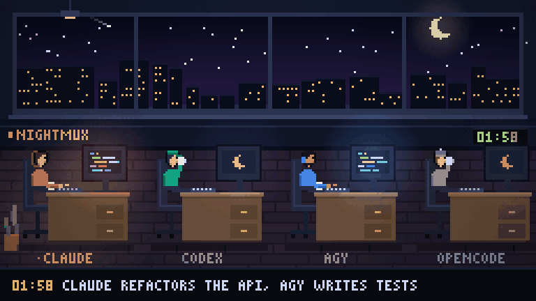

Drive Claude Code, Codex, Gemini, agy, opencode, Cursor, Amp, Goose, Qwen Code and aider from your phone. Usage limit at 2 AM? Your queue waits and resumes the moment the window resets, or hands the work to another agent. You wake up to a briefing.
🔊 Unmute for the soundtrack · 48 seconds
Claude Code runs out of its 5-hour window at 2:14 AM. nightmux keeps your queue and the cut-off turn, and sends them back the moment the window resets. Can't wait? !failover codex hands the work over now.
One Telegram topic (or dashboard chat) per project, one tmux session behind it. Menus become buttons, so a "yes" is one tap from bed. Photos, files and voice notes go straight to the agent.
!goal npm test runs your check after every turn and sends the failures back. It stops and asks when it goes in circles.
!shift takes one prompt per line and runs them in order. !at 03:00 and !every 4h start work while you sleep.
!race claude,codex runs the same task in two worktrees. Pick the winner with one tap.
What got done overnight, which PRs are ready, which errors came in, and a GIF of the night.
Live context %, the limit windows, auto-compact, a fresh session per task, a prompt coach that catches vague prompts, and !stats says what to change.
Python standard library only, zero dependencies, on your machine with your keys. Nothing is exposed by default. MIT licensed.
One topic, a bench of agents. Switch with !codex, ask one without switching with @agy, hand a stuck task to another with !failover.
The pixel-art office on the dashboard shows every agent at its desk. Here is a made-up night: claude hits its limit, codex takes over, agy asks and gets a yes, claude is back at 04:11.

curl -fsSL https://raw.githubusercontent.com/mmr710/nightmux/main/install.sh | sh
python3 nightmux.py --demo — no bot, no keys.nightmux up starts the dashboard on 127.0.0.1; a bot can be added later.docker run -it -v ~/code:/code -p 127.0.0.1:9090:9090 ghcr.io/mmr710/nightmux